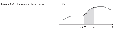
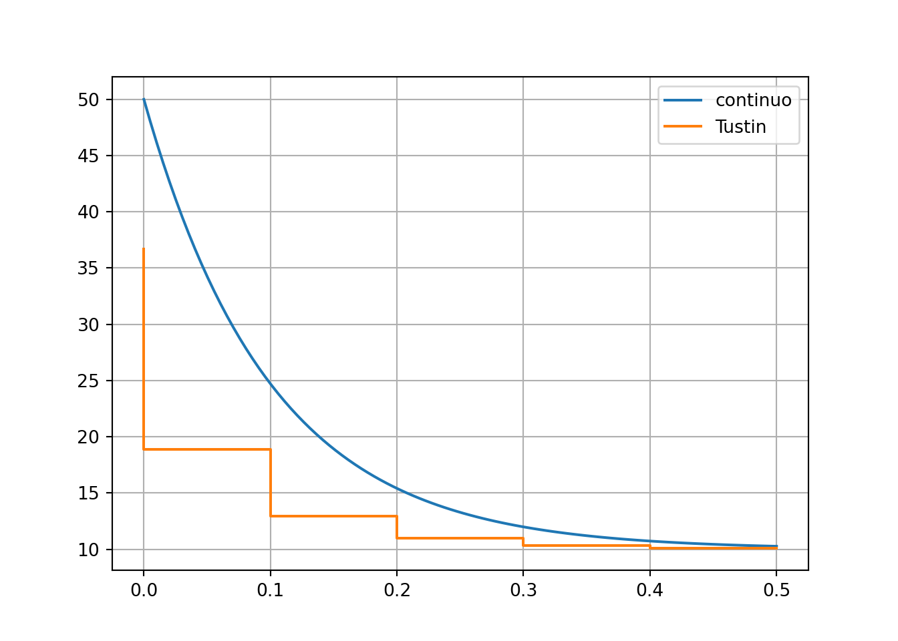
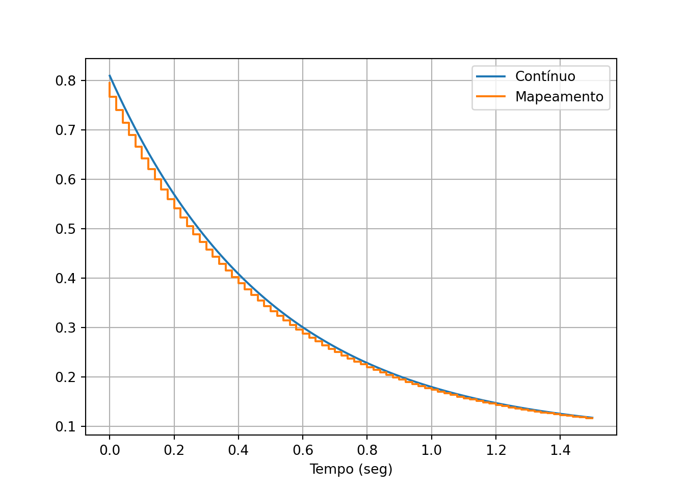

Capítulo 9 Projeto usando equivalentes discretos
Objetivo: digitalizar (isto é, obter a equação de diferenças) de um controlador contínuo que já está projetado.
O resultado é obtido em duas partes:
1 - Obtem-se uma função de transferência discreta a partir de uma contínua 2 - Converte-se a função discreta em uma equação de diferenças
A equação de diferenças pode ser implementada no microcontrolador sem grandes dificuldades.
A seguir vemos 2 métodos para fazer a parte (1).
9.1 Método de Tustin
Idéia central: tratar a aproximação discreta como integração numérica

\[\begin{align} u[k] = u[k-1] + \frac{T}{2}\left(e[k]+e[k-1]\right) \end{align}\]
Transformando:
\[\begin{align}
\frac{U(z)}{E(z)} = \frac{T}{2}\,\frac{1+z^{-1}}{1-z^{-1}}
\end{align}\]
Equação de mapeamento \(s\) para \(z\) \[\begin{align} s \longmapsto \frac{2}{T}\,\frac{1-z^{-1}}{1+z^{-1}} = \frac{2}{T}\,\frac{z-1}{z+1} \end{align}\]
Outra forma de deduzir
Série de Taylor: \(e^{x} \approx 1 + x\)
Então \[\begin{align} z = e^{sT} = \frac{e^{sT/2}}{e^{-sT/2}} \approx \frac{1+sT/2}{1-sT/2} \end{align}\]
Resolvendo \(s\) em função de \(z\) resulta na mesma equação.
Exemplo 8.1:
\[\begin{align} D(s) = 10\,\frac{s/2+1}{s/10+1} \end{align}\]
\(\omega_s = 25\cdot \omega_{BW} =250\) rad/s.
\(f_s \approx 40\) Hz. \(T =1/40 = 0.025\) seg.
O pacote “control” possui funções especializadas que resolvem facilmente estas contas. No entanto, parece haver algumas diferenças de implementação que produzem resultados ligeiramente diferentes.
import control as ct
T = 0.025
Ds = 10*ct.tf([1/2,1],[1/10,1])
Dz = ct.c2d(Ds,T,method='bilinear')
print('Discreto: ', Dz)## Discreto:
## 45.56 z - 43.33
## ---------------
## z - 0.7778
##
## dt = 0.025Solução com pacote simbólico
import sympy as sp
T = 0.025
s,z = sp.symbols(['s', 'z'])
Ds = 10*(s/2+1)/(s/10+1)
Dz = Ds.subs(s,(2/T)*(z-1)/(z+1))
Dz = Dz.simplify()
str = sp.latex(Dz)\[ D(z) = \frac{10 \cdot \left(410.0 z - 390.0\right)}{90.0 z - 70.0} \]
Sempre é bom fazer uma simulação e ver se os resultados são coerentes. Tente melhorar os resultados com o período de amostragem.
T = 0.1
Ds = 10*ct.tf([1/2,1],[1/10,1])
Dz = ct.c2d(Ds,T,method='bilinear')
td,yd = ct.step_response(Dz,0.5)
t,y = ct.step_response(Ds,0.5)
from matplotlib import pyplot as plt
plt.plot(t,y,label='continuo');
plt.step(td,yd,label='Tustin');
plt.grid();
plt.legend();
plt.show();
9.2 Mapeamento de pólos e zeros
- Calcule um pólo/zero discreto para cada pólo/zero contínuo usando \(z=e^{sT}\).
- Iguale o número de zeros ao de pólos adicionando termos \((z+1)\) ao numerador (opcional)
- Multiplique a função de transferência por um ganho de modo que o ganho DC discreto seja igual ao contínuo.
Exemplo 8.2:
O controlador encontrado é \(D(s) = 0.81\,\displaystyle\frac{s+0.2}{s+2}\). O período de amostragem estabelecido é 1 segundo. O controlador possui um pólo em \(s=-2\) e um zero \(s=-0.2\).
Como o controlador tem o mesmo número de pólos e zeros, então o controlador digital deverá ser da forma:
\[\begin{align} \hat{D}(z) &= K \frac{z-a}{z-b} \end{align}\]
Cálculo do pólo: \(b = \exp(-2\cdot 1)\) (resultado será visto em Python)
Cálculo do zero: \(a = \exp(-0.2\cdot 1)\)
O ganho digital \(K\) é calculado igualando os ganhos DC da FT contínua e discreta, \(D(0)=\hat{D}(1)\).
Resolução simbólica
Período de amostragem. Mapeamento dos pólos discretos a partir dos contínuos.
Construção das funções contínua e discreta.
Iguala os ganhos DC e estabelece equação final
\[ 0.081 = 0.209668092980224 K \] Resolução da equação com o próprio “sympy”.
Solução do ganho: \[ K = 0.386324875896305 \]
Retorna à função original para encontrar forma final:
\[\begin{align} D(z) &= \frac{0.3863 \left(z - 0.8187\right)}{z - 0.1353}\\D(z) &= \frac{0.3863 z - 0.3163}{z - 0.1353} \end{align}\]
Fazer com o módulo “control” é um pouco mais direto. Acompanhe:
Ds = 0.81*ct.tf([1,0.2],[1,2])
T = 0.020
a = np.exp(T*Ds.zeros())
b = np.exp(T*Ds.poles())
num = np.poly(a)
den = np.poly(b)
Dz = ct.tf(num,den,T)
Dz = Dz*Ds.dcgain()/Dz.dcgain()
print(Dz)##
## 0.081 z - 0.08068
## ------------------
## 0.1018 z - 0.09782
##
## dt = 0.02Vamos fazer uma simulação para conferir:
## [<matplotlib.lines.Line2D object at 0x000002B053DA1E20>]## [<matplotlib.lines.Line2D object at 0x000002B053DA3A70>]## Text(0.5, 0, 'Tempo (seg)')## <matplotlib.legend.Legend object at 0x000002B054AA90A0>
Exemplo um pouco mais complexo:
Ache o equivalente por mapeamento da função: \[ \begin{align} G(s) &= \frac{s^2-1}{s(s^2+16)} \end{align} \]
Utilize \(T=0.01\).
from numpy import exp, round
T = 0.05
polos = [0,4j,-4j]
zeros = [-1,1]
A = [exp(s*T) for s in polos]
B = [exp(s*T) for s in zeros]K1 = sp.symbols('K_1')
G1 = K1 * sp.prod([z-b for b in B]) / sp.prod([z-a for a in A])
DC1 = sp.simplify(G1*(z-1)).subs(z,1)
DC = -1/16
k1 = sp.solve(sp.Eq(DC1,DC))[0]
G1 = G1.subs(K1,k1)\[ G(z) = \frac{0.9965 \left(z - 1.051\right) \left(z - 0.9512\right)}{\left(z - 1.0\right) \left(z - 0.9801 - 0.1987 i\right) \left(z - 0.9801 + 0.1987 i\right)} \]
K2 = sp.symbols('K_2')
G2 = K2 * sp.prod([z-b for b in B]) *(z+1) / sp.prod([z-a for a in A])
DC2 = sp.simplify(G2*(z-1)).subs(z,1)
DC = -1/16
k2 = sp.solve(sp.Eq(DC2,DC))[0]
G2 = G2.subs(K2,k2)\[ G(z) = \frac{0.4982 \left(z - 1.051\right) \left(z - 0.9512\right) \left(z + 1.0\right)}{\left(z - 1.0\right) \left(z - 0.9801 - 0.1987 i\right) \left(z - 0.9801 + 0.1987 i\right)} \]
9.3 Converter para equação de diferenças.
Para converter a função do controlador para uma equação de diferenças, introduzimos os sinais de entrada e saída do controlador, distribuimos os coeficientes da equação depois aplicamos a transformada inversa.
Normalmente a equação de diferenças é escrita em termos de atrasos (valores passados), então pode ser conveniente converter a função discreta para potências negativas antes de fazer a transformação.
Voltando ao exemplo 8.2:
Como o sistema é de ordem (grau do denominador) 1, multiplicamos numerador e denominador por \(z^{-1}\).
\[\begin{align} D(z) &= \frac{0.3863𝑧−0.3162}{𝑧−0.1353}\,\cdot \frac{z^{-1}}{z^{-1}}\\ &= \frac{0.3863−0.3162z^{-1}}{1−0.1353z^{-1}} \end{align}\]
Introduzimos os sinais de entrada \(E(z)\) (erro) e saída \(U(z)\) (ação de controle) na equação e distribuimos.
\[\begin{align} \frac{U(z)}{E(z)}&= \frac{0.3863−0.3162z^{-1}}{1−0.1353z^{-1}}\\ (1−0.1353z^{-1})\,U(z) &= (0.3863−0.3162z^{-1}) E(z)\\ U(z) &= 0.1353z^{-1}U(z) + 0.3863E(z)−0.3162z^{-1}E(z) \end{align}\]
Aplicando a transformada inversa e a propriedade do atraso temos a equação que implementa o controlador:
\[\begin{align} u[k] &= 0.1353u[k-1] + 0.3863e[k]−0.3162e[k-1] \end{align}\]